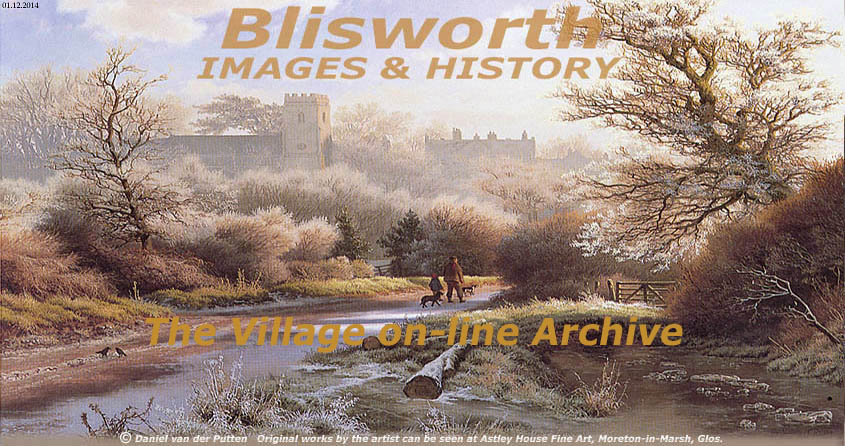

|
PLEASE NOTE - THIS WEBSITE HAS NO LINKS WITH THE BLISWORTH PARISH COUNCIL |
|||||||||||||||||||||||
|
 |
|||||||||||||||||||||||
|
WITH
A WIDE SCREEN LAPTOP YOU MIGHT FIND IT HELPS TO EXPAND
|
|||||||||||||||||||||||
|
RELATIVELY RECENT EVENTS INC. NEWS ITEMS - - - THE LINKS ARE BELOW - - - |
|||||||||||||||||||||||
|
Archeology of the 1800-5 Hill Railway c. 1965 An Account of the Housing Expansion 1938 onwards
Audio Tapes of Stories by Geo. Freeston,
1950 - 1993 The Northampton Rapid Transit Project, 1994 - 1999 Blisworth Tunnel Bicentenary Celebration June 2005 Blisworth Walks and Legging Re-enactment Sept 2005 The new Blisworth Marina 2006/7 Archaeological Dig near the Saltway Aug 2007 Down to just one Shop, High Street Feb 2008 Latest on new Affordable (Social) Housing 2009/10 Formation of new Village Canal Partnership March 2009 The Future of the Royal Oak Pub ? 2009 - Village Community Plan, Sept 2009 - Oct 2010 Canal-Side Improvements 2010 - 2013 Engineering Concerns about the Stoke Road A New Scout Hall is established Nov 2011 Queen's Diamond Jubilee Celebrations June 5th, 2012 Queen's Jubilee Scrapbook of Blisworth Dec 2012/2014 Blisworth wins Best Northamptonshire Village July 2012 New Gates and a Mural at the Tunnel Mouth Oct 2013 Item
on Woodland Conservation Dec 2013 - |
Blisworth By-pass - from the beginning 1810 to 1991 Repairs to Blisworth Tunnel 1982 - 1984 Proposed New Housing Estate July 1988 Wheely Bin Advent August 1999 Restoration of the Church Bells August 2004 Blisworth's Affordable Housing Project 2006/7 The Tapestry Project 2006 to February 2010 The Cherry Dairies Milk Bottle Nov 2007 Village Fund Raising
held annually in the summer - Installation of a Safety Barrier, Stoke Road Nov 2008 New Sports and Play Equipment June - Sept 2009 25th Anniv'y of the 1980s Tunnel Repairs Aug 22, 2009 Update on the Sun, Moon & Stars building 2006/13 The
Blisworth Festivals 2010, 2011,
2012, 2013,
2014, Blisworth and the Planners 2009 - 2011
"Localism" may alter
Blisworth Planning, 2011 - 2012 |
||||||||||||||||||||||
|
Background and Copyright statement - below |
|||||||||||||||||||||||
|
The first thing to make clear is that this website has no connection with Blisworth Parish Council. The basic objective of the website is to maintain an on-line archive which combines the historical material from George Freeston's collection with more recent writings on the history of the village and with an on-going record of recent major developments in the village which in turn becomes history too. Naturally, we are always open to suggestions for improving the presentation on this site and enhancing the quality of the material. Some may have valuable ideas and we are keen to hear them. By the way, we are never shy of linking to other sites in order to satisfy an assumed keenness of any browsing user to chase up anything related. Our links are without prejudice - competition on the internet is to be abhorred. Copyright: There maybe many photos on this site which are not acknowledged in terms of their copyright. In every case I have looked for copyright evidence and found no trace. If any doubt is raised, I will immediately removed the image. It cost too much in time and coding complexity to protect each image from on-line copying and so the images on this site are not protected - remember it is up to the copyists to determine copyright and they should be cautious in their actions. Readers: thank you all for your time and your kindness in contributing views and historical detail.
|
|||||||||||||||||||||||
|
NB: The six small pictures
on the home page are regarded as village icons, |
|||||||||||||||||||||||
{kind=link}
{kind=link}